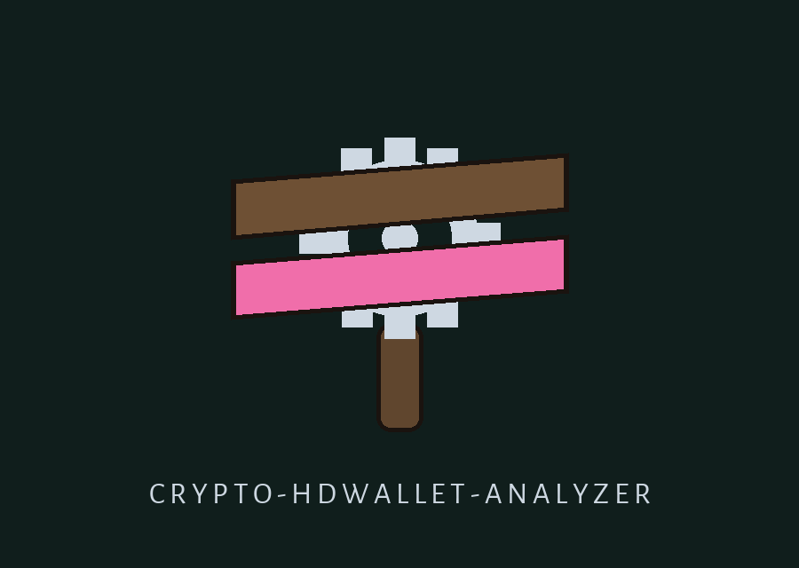

crypto-hdwallet-analyzer: The Night Watchman's Rattle Round
Theme: The Night Watchman's Rattle Round. Headings in Comfortaa, running text in Alegreya Sans.

Add the Derived Private Value to the File
The file then holds key material and is made private to its owner.
What the Round Derives
The program works a seed through BIP32 and reports what comes out. The master step is HMAC-SHA512, keyed with the words Bitcoin seed, over the seed bytes given in hex. Child steps are hardened and normal, on secp256k1. The path form is m/x/y/z, and an apostrophe marks a hardened step. One path from the README stands as path example only: m/44'/0'/0'/0. No seed value is shown on this page. No derived value is shown on this page. Report lines are named, not printed.
What the Round Never Decides
No Ethereum address comes out of this code. No weakness score comes out of it either. The repo headline speaks of weak or compromised seeds; the code makes no such judgement. It derives. It compares. It reports reuse or no reuse. This page keeps that width and no wider.
Install line, flagged in place
The README install line is shown word for word in the preserved record below and is flagged there: wrong organisation. The right name is ShadowGuard-AI.
Use line, flagged in place
The README use line is a placeholder, not a runnable form. The forms the parser takes are two: python3 main.py with the seed option and the derivation path option both set, and python3 main.py with the private key file option and the public keys option both set. One pair or the other; half a pair gets a warning line and no work.
The Two Working Pairs
Controls in parser order. Help: -h, prints help and exits. The seed option takes hex text, no default, and is half of pair one. The derivation path option takes path text, no default, and is the other half of pair one; a path must start with m, each step must sit in range, and a hardened step may carry an apostrophe, an h or an H. The public keys option takes a path to a list file, one key per line. The private key file option takes a path to a PEM file holding an elliptic curve key. The verbose flag raises the log to debug level. The output option takes a path for the results file. The include private key flag adds the derived private value to the results file only; the file is then made with 0600 permissions and a warning is printed, and without an output path the flag writes nothing and warns of that too.
A Match Must Be Exact
On a pair one run the derived public value is logged, and the results hold that value plus an extended public key line. The reuse check, when a list file is set, matches the derived public form against each list line as an exact string. The same key in a different written form reads as no reuse; upper case reads as no reuse; uncompressed form reads as no reuse. A check that could not run is written as not checked. It is never written as clear.
Endings
No usable pair: empty results, exit 1. Reuse check failed after other work: results written, then exit 1. Clean run with results and no failed check: exit 0. PEM path faults, a missing file or the wrong key kind, are logged and give empty or partial results on the same rule.
Licence, flagged in place
The README licence line stands in the preserved record below and is flagged there. Separately, the LICENSE file holds the MIT License text. Both facts stand; neither is tidied into the other.
Record preserved from the README
 # crypto-hdwallet-analyzer Scans Hierarchical Deterministic (HD) wallets for weak or compromised seeds, derivation paths, and key reuse, using real BIP32 derivation: the master key is HMAC-SHA512 with the key Bitcoin seed over the seed, the chain code is carried through hardened and normal child derivation on secp256k1, and paths use the m/x/y/z forms with the apostrophe hardened marker (for example m/44'/0'/0'/0). The derived keys are the keys a BIP32 wallet derives for that seed and path. This tool does not derive Ethereum addresses. Detects potential vulnerabilities arising from poor key management practices. - Focused on Basic cryptographic operations ## Install `git clone https://github.com/ShadowStrikeHQ/crypto-hdwallet-analyzer` ## Usage `./crypto-hdwallet-analyzer [params]` ## Parameters - `-h`: Show help message and exit - `--seed`: No description provided - `--derivation_path`: The derivation path (e.g., m/44 - `--public_keys`: No description provided - `--private_key_file`: Path to PEM-encoded private key file - `--verbose`: Enable verbose output. - `--output`: Output file for results. By default the file holds the derived public key and the key reuse result, not the derived private key. The console log also shows the derived public key, not the raw private key. - `--include-private-key`: Include the derived private key in the output file. Only with this flag is the private key written into the output file. The file is then created with 0600 permissions and a warning line prints that the file now holds key material. ## License Copyright (c) ShadowStrikeHQ
Facts from the code, stated in the prose
Facts from the code, stated in the prose. This record names: BIP32, HMAC-SHA512, Bitcoin seed, secp256k1, m/44'/0'/0'/0, 0600, python3 main.py, PEM, Extended public key, Key reuse check: not checked. One pair or the other must come together: the seed option with the derivation path option, or the private key file option with the public keys option. Half a pair gets a warning line and no work. A path must start with m, each step must sit in range, and a hardened step may carry an apostrophe, an h or an H. Hardened steps cannot be derived from a public key. Endings: no usable pair gives empty results and exit 1; a reuse check failed after other work gives results written, then exit 1; a clean run with results and no failed check gives exit 0.